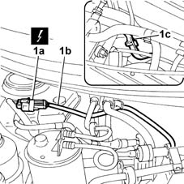
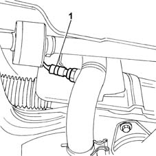

1080B95 rear lambda probe with catalitic converter r r
- Path
- Procedures > 10 ENGINE UNIT > 1080 EXHAUST EMISSION CONTROL SYSTEM > 1080B exhaust emission control system > 1080B95 rear lambda probe with catalitic converter r r
- Kind
- repair procedure (removal / refitting; the operation number is the code)
- Applies to
- engines: 1.6 16v; all production periods
- Interactive page
- https://sloeber94.github.io/elrnDB-fMltpl/en/#/2891300
Applies to: engines: 1.6 16v; all production periods; only with equipment: Euro 3
 Removing
Removing
 Refitting
RefittingPlace the car on a lift.
Disconnect the battery negative terminal.
1. Disconnect the electrical connector (1a) for the Lambda sensor and release the wiring (1b) from the springs on the retaining bracket (1c) near the alternator.

Applies to: engines: 1.6 16v; all production periods; only with equipment: Euro 3
Raise the lift.
1. Unscrew the lambda probe and remove.

Applies to: engines: 1.6 16v; all production periods; only with equipment: Euro 3
Refitting
RemovingTighten the lambda probe to torque.
 | Fastening | Component | Ø | Value (daNm) |
|---|---|---|---|---|
- | Lambda probe | CONVERTER REAR LAMBDA SENSOR | M8 x 1.5 | 4.5 |
Lower the lift.
Connect the electrical connector for the Lambda sensor and secure the wiring to the springs on the retaining bracket near the alternator.
Connect the battery negative terminal.
Remove the vehicle from the ramp.